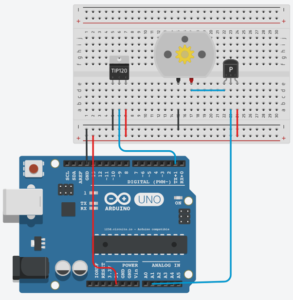
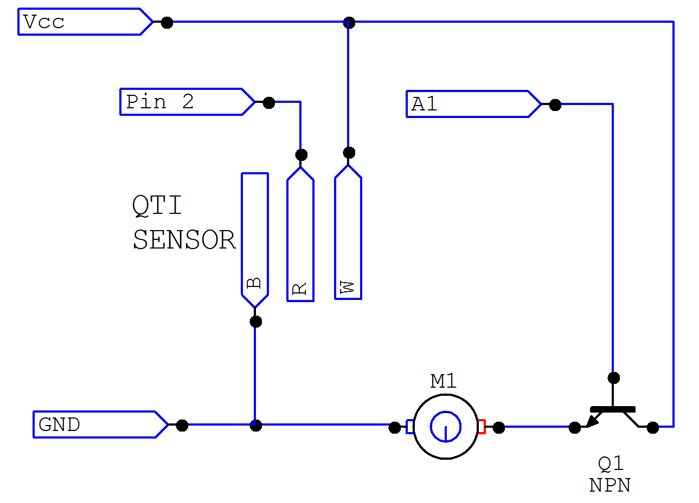

Motors & Sensors
Description:
When the QTI is exposed to light, the motor will spin faster. When the QTI sensor is taken away from light, the motor will spin slower.
Important Notes:
- Analog and digital pins are used in this project
- On the schematic, the TIP120 should be replaced with a QTi sensor
- When building the circuit, the transistor used should be a NPN transistor, not PNP
Materials:
- 1x Arduino uno
- 1x Breadboard
- 1x QTi sensor
- 9x male to male jumper wires
- 1x 2N3904 Transistor
Instructions:
- Connect the QTi to the breadboard (pin to the far left should be placed in slot E5 and the pin to the far right should be placed in E7 *note - the TIP120 component on the schematic should be replaced by the QTi sensor
- Take a wire, connect one end of the wire to the B pin on the QTi sensor (the pin closest to the left) and connect the other end to ground [negative] (A5:ground/negative)
- Take a wire, connect one end of the wire to the W pin on the QTi sensor ( the pin closest to the right) and connect the other end of the wire to positive [VCC] (A7:positive/VCC)
- Take a wire, connect one end of the wire to the middle pin on the QTi sensor and connect the other end of the wire to pin 1 on the DIGITAL side on the arduino (A6:1)
- Connect the motor to the breadboard (negative pin should be inputted into E15, positive pin should be inputted into E17)
- Take a wire, connect one end to the breadboard ensuring that one end is connected to the negative side of the motor and the other end is connected to negative[ground] on the breadboard (A15:ground/negative)
- Connect a transistor to the breadboard so that the left pin (emitter/E) is in pin E22 and the right pin (collector/C) is in pin E24.
- Take a wire, connect one end of the wire to the positive side of the motor (D17) and connect the other end of the wire to the emitter end of the transistor(D22)
- Take a wire, Connect one end of the wire to the base pin of the transistor (A23) and connect the other end to pin A1 on the ANALOG side of the arduino.
- Take a wire, connect one end to the emitter end of the transistor (A24) and the other end to positive/VCC on the breadboard
- Take a wire, connect one end of the wire to positive [VCC] on the breadboard and connect the other end of the wire to 5V on the POWER side of the arduino
- Take a wire, connect one end of the wire to ground on the breadboard and connect the other end of the wire to GND [ground] on the arduino
Schematic/Breadboard diagrams:
 Demonstration:
Related: Motors & Sensors Software Tutorial